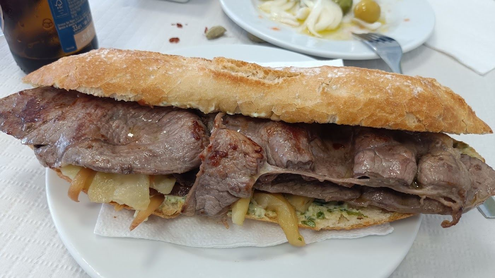
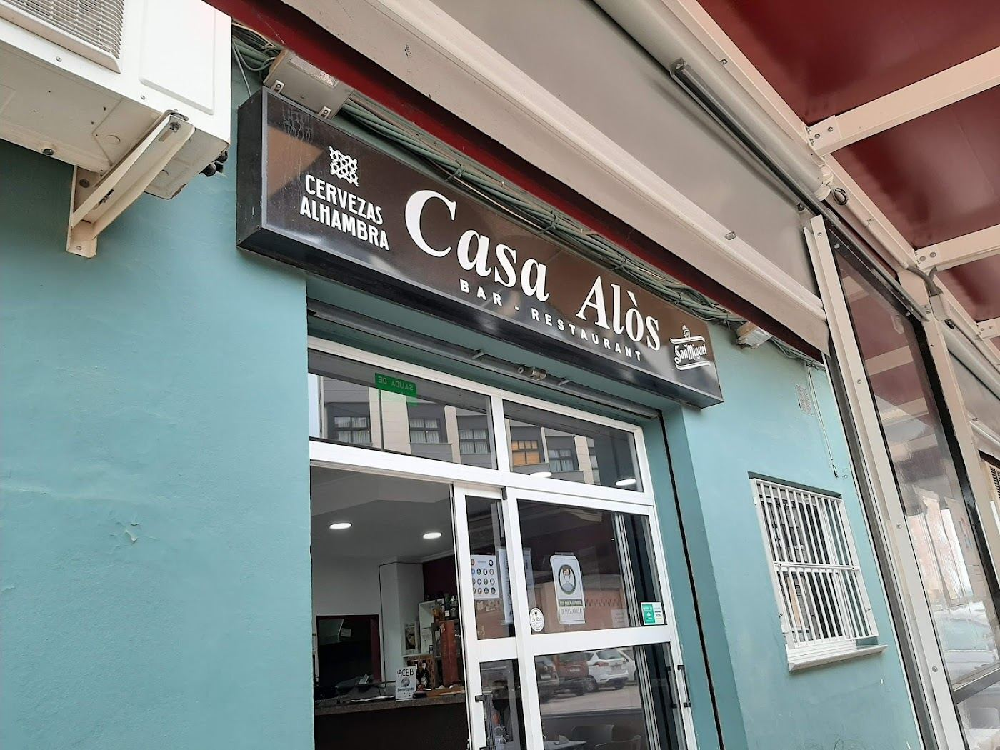
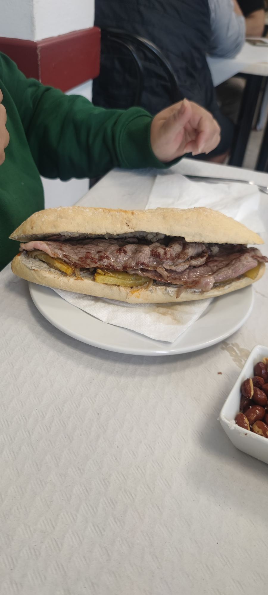
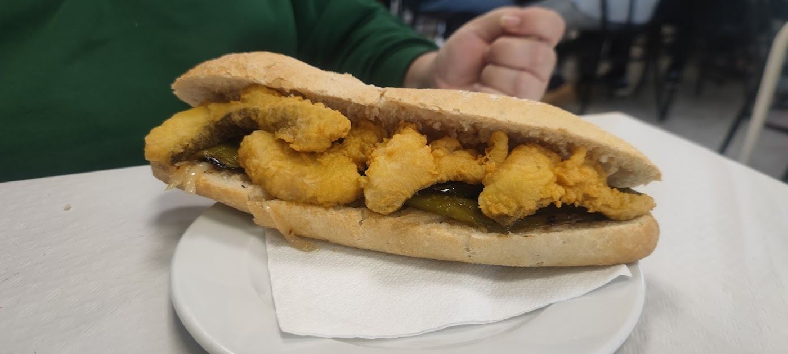
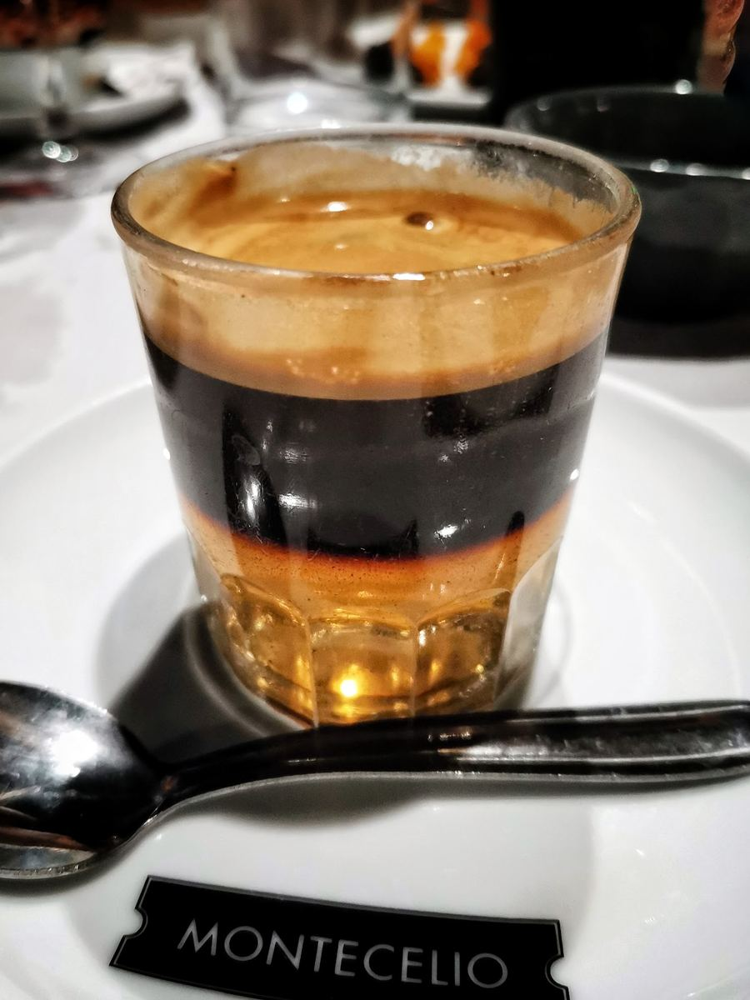
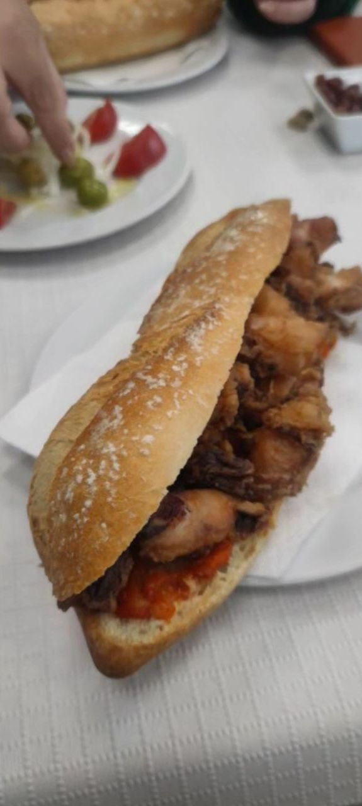
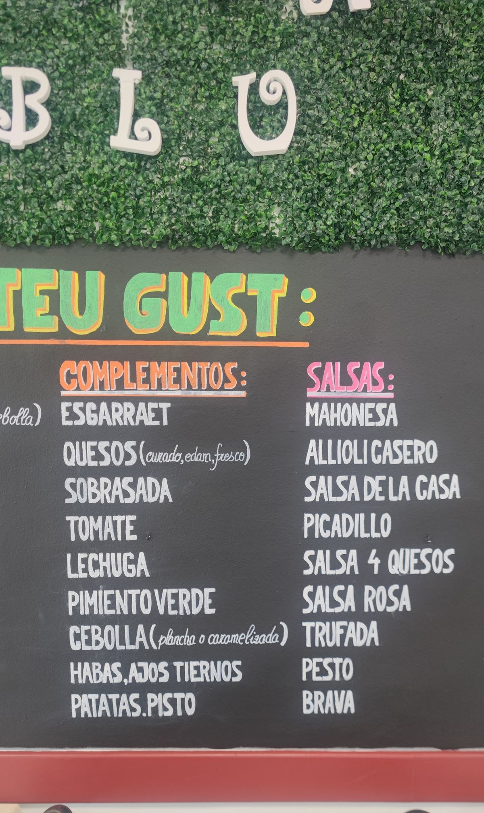
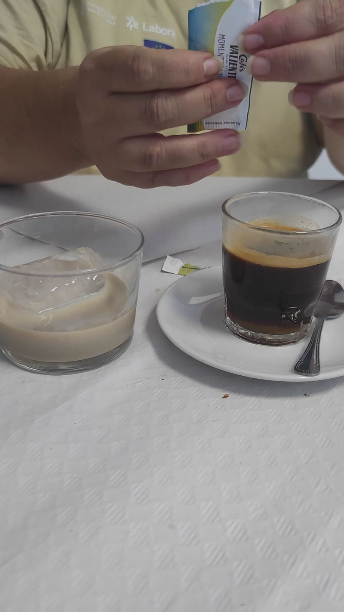

El bocata de la casa
Carne de caballo con patatas panaderas, cebolla y salsa trufada. También de ternera, cerdo o pollo, o de bacalao rebozado, con la salsa que elijas.
Almuerzos, bocatas y cenas de viernes y sábado en Benifaió. Todo recién hecho, sin vitrina.
Comprobando horario…

El mural de la casa, para tocar. Elige la carne, los complementos y las salsas, y te preparamos el resumen para llamar o escribir.

Carne de caballo con patatas panaderas, cebolla y salsa trufada. También de ternera, cerdo o pollo, o de bacalao rebozado, con la salsa que elijas.

Pan de bocadillo bien relleno y la carne hecha al momento.

Del mar, para los días que no apetece carne. El bacalao rebozado también.

Para cerrar el almuerzo como se hace aquí.
4,3 sobre 5 con 318 reseñas
Casa Alós es un bar restaurante que ofrece bocatas buenísimos, una ensaladita deliciosa y materias primas frescas y de calidad. Sus cacahuetes fritos son el complemento perfecto y su terraza cerrada con estufitas es un detalle que se agradece. Recomiendo encarecidamente visitar este lugar, deleitarse con su comida y disfrutar de sus buenos precios.Reseñas de Google
He venido a almorzar, y me ha sorprendido muchísimo, no tiene vitrina de comida,lo hacen todo recién hecho ..La ensalada con tomate valenciano muy rica y el bocata de sepia y el pan de 10.. Recomendable 100%..a y la camarera muy simpática y profesionalReseñas de Google
Estupendo almuerzo, muy sabroso y muy completo. La ensalada sobre todo, brutal. He acudido adrede desde Almussafes por una recomendación, y volveré muy muy pronto.Reseñas de Google
Fotos de la casa y de los platos, sacadas de Google. En la web final irían las vuestras.



| Lunes | 8:30 a 13:00 |
|---|---|
| Martes | Cerrado |
| Miércoles | 8:30 a 13:00 |
| Jueves | 8:30 a 13:00 |
| Viernes | 8:30 a 13:00 y 20:30 a 24:00 |
| Sábado | 8:30 a 13:00 y 20:30 a 0:30 |
| Domingo | 8:30 a 13:00 |
El horario puede cambiar en festivos.
Esta franja no aparece en la web publicada.